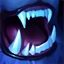
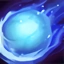

CALL OF THE FRELJORD
Nunu increases the attack speed and Move Speed of Willump and a nearby ally, and causes Willump's basic attacks to damage enemies around the target.
CONSUME
Willump takes a bite out of a minion, monster, or enemy champion, dealing damage and healing himself.
BIGGEST SNOWBALL EVER!
Willump creates a snowball that grows in size and speed as he rolls it.
The snowball damages and knocks up enemies.
SNOWBALL BARRAGE
Nunu throws multiple snowballs that damage enemies. When he's finished, Willump roots any champions or large monsters that were hit by a snowball.
ABSOLUTE ZERO
Nunu & Willump create a powerful blizzard in an area that slows enemies and deals massive damage at the end.